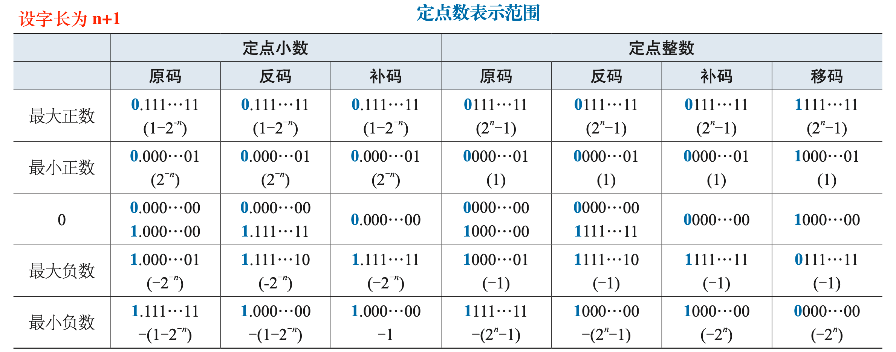

将带‘\(\pm\)’的数称为真值，将符号和数值一起编码的二进制串称为机器码。
无符号数¶
直接将一个十进制数转化为二进制形式，作为其编码。
- 长度为 \(n\) 的编码可以表示的范围为：\(0\sim 2^n-1\)
- **\(2^n-1\) 的二进制串为：\(n\) 个
1** - \(2^m\) 的二进制串为：
1后面跟着 \(m\) 个0（共 \(m+1\) 位）
计算机中的地址就是无符号数。
对于纯小数，有：
- **最低位为
1，其它位全为0的 \(n\) 位纯小数的值为：\(2^{-n}\) ** - **全为
1的 \(n\) 位纯小数的值为：\(1-2^{-n}\) **
有符号数¶
正数的最高位总是 0，负数的最高位总是 1。
原码（Sign magnitude）¶
\(n\) 位原码即：符号位(1位) + 真值绝对值的二进制串(n-1位)。
| 整数 | 小数 | |
|---|---|---|
| 表示范围 | \(-(2^{n-1}-1) \ \sim\ 2^{n-1}-1\) | \(-(1-2^{-(n-1)})\ \sim\ 1-2^{-(n-1)}\) |
| 0的表示 | 0,0...0 和 1,0...0 两种 |
0.0...0 和 1.0...0 两种 |
| 真值 | \(\textcolor{red}{(-1)^{b_{n-1}}}\cdot\sum\limits_{i=0}^{n-2}b_i2^i\) |
反码（Ones' complement）¶
非负数的反码与原码相同；负数的反码为：绝对值的 \(n\) 位原码全部取反。
| 整数 | 小数 | |
|---|---|---|
| 表示范围 | \(-(2^{n-1}-1) \ \sim\ 2^{n-1}-1\) | \(-(1-2^{-(n-1)})\ \sim\ 1-2^{-(n-1)}\) |
| 0的表示 | 0,0...0 和 1,1...1 两种 |
0.0...0 和 1.1...1 两种 |
| 真值 | \(\textcolor{red}{-(2^{n-1}-1)}b_{n-1}+\sum\limits_{i=0}^{n-2}b_i2^i\) |
注意：原码和反码之间可以构成一一映射，因此其表示范围与原码相同。
补码（Two's complement）¶
非负数的补码和原码相同；负数的补码即：反码 + 1。
| 整数 | 小数 | |
|---|---|---|
| 表示范围 | \(\(-2^{n-1}\ \sim\ 2^{n-1}-1\)\) | \(-1\ \sim\ 1-2^{-(n-1)}\) |
| 0的表示 | 0,0...0 |
0.00...0 |
| 真值 | \(\textcolor{#F00}{-2^{n-1}}b_{n-1}+\sum\limits_{i=0}^{n-2}b_i2^i\) |
注意：
-
0 的补码只有一种，因此补码的表示范围要比原码、反码多1（\(-2^{n-1}\) 或 \(-1\)）。
-
\(-1\) 的补码为：
1,11~1，\(-2^{n-1}\) 的补码为：1,000~0\(-2^{-(n-1)}\) 的补码为：
1.11~1，\(-1\) 的补码为：1.00~0【 \(2^{-(n-1)}\) 是最小单位 】
补码与原码的转换¶
原码 → 补码：
- 若为正数，则原码就是补码
- 若为负数，则：
- 方法1：先求出绝对值的 \(n\) 位原码，将所有位取反，再加 1。
- 方法2：先求出绝对值的 \(n\) 位原码，从右到左顺序扫描，右起第一个
1及其右边的0保持不变，其余各位取反。
补码 → 原码：
- 若补码符号位为
0，则就是原码 - 若补码符号位为
1，则：- 方法1：将数值部分所有位取反，再加 1。
- 方法2：对数值部分从右到左顺序扫描，右起第一个
1及其右边的0保持不变，其余各位取反。
深入理解¶
补码的理论基础是定义了模 \(M\) 加法运算的代数系统。
对于一个长度为 \(n\)（字长）的补码，最高位为符号位，因此可以表示的非负数的范围为：\(0\sim 2^{n-1}-1\)。而对于负数，从另一个角度进行考虑，用从 \(2^n\) 中拿走 \(x\) 后剩余的数来表示\(-x\)。例如 -1 表示为从 100..00 中拿走 1，即 11..11 。
即：正数，我们关注的是它比 \(0\) 大多少；而负数，我们关注的是它比 \(2^n\) 缺多少。
从 \(2^n\) 中拿走 \(2^{n-1}-1\) 后剩余的数为 10..01，因此定义\(-(2^{n-1}-1)\)的补码为 10..01，从 \(2^n\) 中拿走 \(2^{n-1}\) 后剩余的数为 10..00，因此定义\(-2^{n-1}\)的补码为10..00 。若再多拿一点，则结果的最高位就会变成0，与之前正数的编码产生冲突。为保证编码的唯一性，因此负数至多只能表示到\(-2^{n-1}\)，负数补码的最高位总是1。
对于补码 \(1b_{n-2}...b_1b_0\)，根据上述思路也可以求出该补码对应的负数为： $$ -(2n-\sum\limits_{i=0}b_i2i)=-[2n-(2{n-1}+\sum\limits_{i=0}b_i2i)]=-2+\sum\limits_{i=0}{n-2}b_i2i $$
变形补码（双符号位）¶
采用两个二进制位来表示数据的符号，其余与补码相同。
变形补码常用于进行溢出检测：运算时最高符号位永远表示正确的符号。
- 符号位为
01表示发生正溢出 - 符号位为
10表示发生负溢出
上述方法很适合手工运算，但实际计算机中因为成本问题主要采用单符号溢出检测方案。
移码¶
移码只用于定点整数的表示，编码方式是直接将真值加上一个常数偏移量。
对于 \(n\) 位移码，通常取偏移量为 \(2^{n-1}\)，此时效果上，一个数的移码就是将其补码的符号位取反（可见，补码和移码表示的范围是相同的），满足：1 正 0 负。
移码起到了偏移的作用，它将整个补码范围 \([-2^{n-1},\ 2^{n-1}-1]\) 平移映射为 \([0,\ 2^n-1]\) ，使得移码在逻辑比较操作中可以得到和真值比较相同的结果，即：\(X>Y\ \Longleftrightarrow\ [X]_{移码}>[Y]_{移码}\) 。

总结¶
